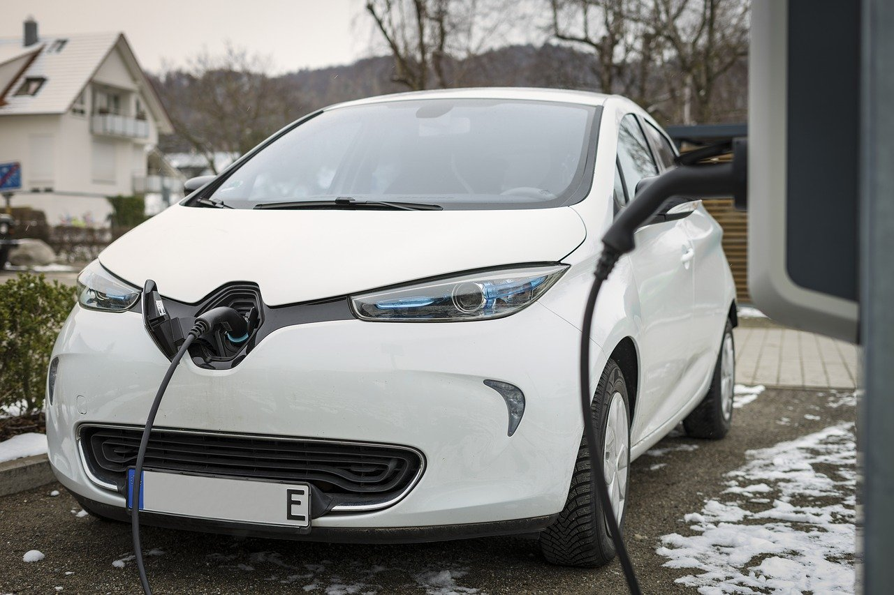

SPAIN IS WORKING ON A CLIMATIC LAW
Spanish government is taking some measures to promote self-consumption energy, but most of the actions aimed at transport are missing.
From past march, Spain has a Climatic Change and Energetic Transition Law that aims to help the country to reach climatic neutrality (greenhouse gases that can be absorbed by natural sinks, such as oceans and forests) before 2050.
Legislation has prompted the Executive to implement reforms to promote energy self-consumption, but there are still pending regulations to modify transport, which emissions have continued to grow in recent years. We will be seeing the changes that the law has already achieved and those that are still pending.
Approved:
Horizontal Property Law. The climate law committed the Government to modify the regulation that controlled residential buildings to facilitate photovoltaic installations for self-consumption in homeowners' associations. The reform was approved last October 5 and simplifies the procedures for works that contribute to the improvement of the building's energy efficiency or the implementation of renewable energy sources for common use, such as solar panels. In addition, the legal security of neighboring communities is reinforced so that they can access the line of ICO guarantees to guarantee credits destined to the energy rehabilitation of buildings, to which the Ministry of Transport allocates 1,100 million euros.
Aid to promote self-consumption and zero-emission heating. In June, the Ministry of Ecological Transition approved a decree to grant up to 1,320 million in aid - from the Recovery Plan - for self-consumption installations (up to 900 million), storage behind the meter (up to 220 million) and air conditioning with renewable energies (up to 200 million). The actions are aimed at both new homes and in rehabilitation and, according to ministry estimates, will enable the creation of 1,850 megawatts (MW) of renewable generation, which will reduce CO₂ emissions by more than one million tons per year.
Other aid for renewables. In July, the ministry launched another line of aid that contemplates 200 million for thermal renewables in economic sectors, 100 million to boost biogas and 350 for innovative renewables, which include heat and cold networks, as well as the promotion of energy communities and citizen participation.
Zoning of sensitive areas for renewable energy projects. Mega-projects for solar and wind energy are causing a stir in many villages in empty Spain because of their impact on the landscape, the rural economy and biodiversity. To avoid these effects, Ecological Transition has developed a mapping tool that zoned the territory according to the impacts that may arise for the implementation of these large projects -the only ones that are under state jurisdiction- taking into account the environmental values of the different areas. The idea is to update it periodically.
National Plan for Adaptation to Climate Change. The climate regulation obliged the Executive to draw up a new plan to face global warming, which was approved last September. The document proposes actions for the next decade in fields such as health, coasts, water management, agriculture, biodiversity or the fight against desertification.
In Process:
Waste Law. The Executive approved in July a waste law that seeks to ban single-use plastic straws, swabs and cutlery and to create two green taxes, on single-use plastic containers and on the deposit of waste in landfills, with the aim of encouraging recycling. However, as it is a law, the regulation is now in the parliamentary process and its final approval is not expected before next spring.
Promotion of recharging points for electric cars.One of the reasons preventing the electric car from taking off is the lack of recharging points. The Ministry undertook to approve a decree to promote these facilities, which has already passed the public consultation process and is pending publication in the coming weeks. Among other issues, the regulation aims to improve the transparency of recharging operators and clarify information on sales prices, thus improving competition.
National Catalog of Charging Points for Electric Vehicles.The climate law gives Transición Ecológica one year to draw up a catalog with all the recharging points for public use, something on which the ministry is still working. It should have it ready before May next year. To do so, companies must send the information on these facilities to the Administration, which will manage it through the National Access Point for traffic information. In the meantime, there are privately produced maps such as electromaps.com.
Recharging points at gas stations.The regulation obliges gas stations to install recharging points for electric cars. The first of the deadlines established, depending on the sales volume of the service station, is 21 months from last May. "Once the national registry is enabled, it will be possible to monitor in real time the implementation of such points in gas stations," explains a ministry spokeswoman. No news for now.
Sustainable mobility law.The Ministry of Transport must approve a sustainable mobility law to boost the decarbonization of urban mobility -with more electric vehicles and more bicycles- and give state funding to public transport, among other points. Raquel Sánchez's department explains that it intends to take the law to the Council of Ministers before the end of the year.